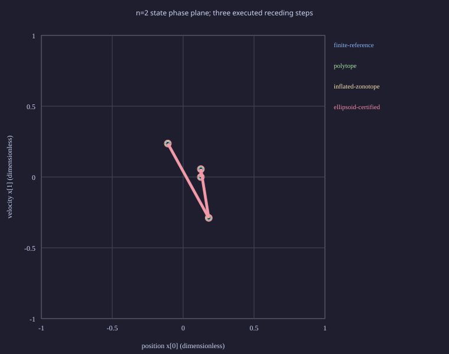

This bounded two-state LTI study solves actual CSL/HiGHS nominal QPs, compares matched fixed-K robust feasibility, and independently checks all continuous-box disturbance costs for the recorded deterministic nominal schedules. It does not compute fixed-plan minimax or general causal optimum.
Source 7e08f9196504488fde4d28bb62ff5030af64fe2f. Independent replay: verified; 180 completed native QPs. Raw mathematical/process records, checker receipt, cost/timing distributions.
At each step u=v+K(x-z), K=(-1,-2); z propagates with the applied nominal v. Full-state measurements affect only the fixed ancillary feedback. The nominal N=3 objective is sum(z²+v²), with terminal z3=0. The finite-error reference uses the same policy and global disturbance clock; invariant tubes are conservative restrictions. All original state/control bounds are checked without clipping. The actual reported objective is sum(x²+u²)+x3² over the three executed steps.
Minimal inputs: A=[[1,1],[0,1]], B=E=(0,1), W=[-1/8,1/8], X=[-1,1]², U=[-1,1]. Initial actual and nominal states coincide at (1/8,0), (3/8,-1/8), or (-1/4,1/8). Exact full-state feedback, independent stage disturbances and continuous actuators are required. Immutable base input; derivation and reproduction commands.
The 17 by 17 initial grid is finite and is not a complete feedback-winning-set characterization. Times are medians [minimum, maximum] in microseconds over completed steps; process/IPC timing is separate from native solve. Actual worst cost ranges cover the same three initial states over all repetitions; exact fractions and matched nominal-objective gaps remain in JSON. No performance ranking is claimed.
| Method | Grid feasible / lost | Actual worst cost range | Native setup | Native solve | Exact QP construction | Independent QP check |
|---|---|---|---|---|---|---|
| finite-reference | 205 / 0 | [0.430447, 0.643277] | 1.89 [1.33, 3.35] | 447.06 [261.84, 1562.21] | 222.31 [157.28, 711.61] | 36.67 [28.70, 142.13] |
| polytope | 139 / 66 | [0.430447, 0.643277] | 1.89 [1.40, 3.28] | 521.58 [261.00, 735.64] | 216.51 [157.07, 689.96] | 36.60 [28.64, 109.30] |
| inflated-zonotope | 87 / 118 | [0.430447, 0.643277] | 1.89 [1.40, 3.42] | 585.48 [264.63, 877.21] | 217.07 [157.91, 701.28] | 36.67 [29.05, 130.46] |
| ellipsoid-certified | 37 / 168 | [0.430447, 0.643277] | 1.89 [1.40, 3.35] | 587.86 [263.72, 903.89] | 234.11 [170.83, 711.26] | 36.81 [29.12, 91.77] |
Equivalent polytope/parallelotope/zonotope descriptions preserve Z. The inflated zonotope and separately certified ellipsoid pass exact RPI and support bounds. The outer coordinate box and the actual APP-04 outer ellipse fail RPI with rational successor witnesses and are rejected for recursive control. Their enclosure direction remains outer; rejection is not an incorrect approximation claim.
State dimension two, position/velocity coordinates. One saved maximizing disturbance path per admitted method is shown for the first initial state. Overlapping curves are valid; they do not establish equal policies on other states.

The original required invariant/tightening figure remains unchanged. These trajectories add online evidence; rendering executes no solver.
Actual cost is checked with exact dyadic controls over all eight disturbance vertices; convexity proves the continuous-box maximum for this deterministic-anchor policy. Native optimum agreement is numerical with an independent exact scalar optimum, not a solver certificate. Initial error is zero, actuators are continuous and disturbances are independent stagewise additive intervals. LTV, correlated/model uncertainty, finite actuators, state-reset policies and general stable-tail construction are unsupported.
Offline construction, online preparation/setup/solve and checker costs are retained separately. This Linux capture does not establish other-platform performance, native thread enforcement, heap/RSS caps or hard real-time deadlines. HiGHS is the existing optional MIT integration; no acados or new required dependency is introduced. Compiler/platform/install checks, independent review and versioned Pages publication remain integration gates; no release is needed for the research tool. Issue #602 remains open until all evidence gates pass.